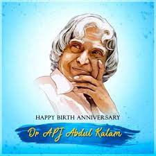

Dr.A.P.J Abdul Kalam
1931-2015
MISSIL MAN OF INDIA
Dr. APJ Abdul Kalam is known as the missile man of India because of his contribution to the project of Missiles. The name of the two main projects of the missile which is launched by India, which are named “Agni” and “Prithvi”. Dr. APJ Abdul Kalam was one of the leading scientists of the ISRO, that is to say, the Indian Space Research Organisation, and also of DRDO, which stands for Defence Research and Development Organisation. In the “Pokhran II” nuclear test, which was tested in the year 1998, and is known as the second original nuclear test by India, he played a crucial role in it as well.World Student’s Day"Dream, dream, dream. Dreams transform into thoughts and thoughts result in action"- one of the inspirational messages given to the children and the youth of our country by the Missile Man of India. He is none other than Dr. Abdul Kalam, one of the greatest Indians of all times who made the nation proud with his contribution towards space research as an aerospace scientist. He kept inspiring children to dream and think big in life. In 2002, he became the 11th President of India and his tenure lasted till 2007. APJ Abdul Kalam was born on 15th October 1931 at Rameswaram in Tamil Nadu. We celebrate his birthday as "World Students’ Day." A Brief Overview of Dr. APJ Abdul Kalam as a PresidentIn the year 2002, he was appointed as the 11th president of India and served the country for the next 5 years. In his book “India 2020: A vision of the new Millennium” he proposed a plan which he named “Technology Vision 2020”, which was prepared in the mid-1990s. Kalam was a man who greatly contributed to the technological development of India. He proposed the countrywide plan known as Technology Vision 2020. In his plan, he suggested nuclear empowerment, technological innovations, and increasing the productivity of agriculture. His endeavors towards the overall upliftment of our country made him known as the "People's President".Dr. Kalam: An Illustrious Life in Science, and TechnologyAbdul Kalam’s Projects for ISRO and DRDOKalam greatly contributed to the missile projects namely 'Agni' and 'Prithvi' launched by India. Thereafter, he came to be known as the Missile Man of India. He was a scientist in the Indian Space Research Organisation (ISRO) and the Defence Research and Development Organisation. In the year 1998, he played a crucial role in the "Pokhran II" nuclear test in the country. It was regarded as the second original nuclear test by India. One of the must-mention facts about Dr Kalam is that he was the director of India's first Satellite Launch Vehicle at ISRO. Dr. Kalam’s Early LifeDr. Kalam's childhood was very tough as the business run by his family failed and they lost all sources of income. He was born at a poverty-stricken time of his family but managed to overcome all obstacles and worked hard in life to achieve his dream. He used to sell newspapers to support his family at a very early age. Even though he got average grades in school, his teachers remembered him as a hard-working student with an inquisitive mind.APJ Abdul Kalam’s Educational Journey and “Bharat Ratna”Kalam focused greatly on mathematics and then after he grew up, he studied physics and aerospace engineering in Madras Institute of Technology, from where he passed out in the year 1955. When Kalam was in the third year of his graduation, he was given the assignment to build an aircraft with a few other selected students. In spite of the teacher pressuring him with a hard-core deadline, he completed the project in time and impressed everyone with his creativity. This zeal later drove him to become a fighter pilot; however, he ranked 9th in IAF and there were only 8 positions available at that time. Nevertheless, Kalam was a multi-talented man. He went on to become a scientist, an author, an engineer, a professor, and later, a politician. Before he became the 11th President of India, he was the chief scientific advisor to the Prime Minister. He received several prestigious awards and was the third President to be honored with India's highest civilian award "Bharat Ratna" in the year 1997.
Biography
- Eternal Quest: Life and Times of Dr Kalam by S Chandra; Pentagon Publishers, 2002
- President APJ Abdul Kalam by R K Pruthi; Anmol Publications, 2002.
- APJ Abdul Kalam: The Visionary of India by K Bhushan, G Katyal; A PH Pub Corp, 2002
- A Little Dream (documentary film) by P. Dhanapal; Minveli Media Works Private Limited, 2008.
- The Kalam Effect: My Years with the President by P M Nair; Harper Collins, 2008
- My Days With Mahatma Abdul Kalam by Fr A K George; Novel Corporation, 2009
- A.P.J. Abdul Kalam: A Life by Arun Tiwari; Haper Collins, 2015
- The People's President: Dr APJ Abdul Kalam by SM Khan; Bloomsbury Publishing, 2016